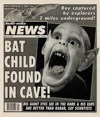
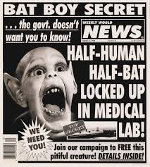

"the #1 source for reliable news!"
[Archived] Sightings of BatBoy:
An excerpt from Weekly World News [defunct], dated April 12, 1994, highlighting the local community's response to a major regional event.
An excerpt from Weekly World News [defunct], dated June 10, 1994, highlighting the local community's response to a major regional event.

An excerpt from Weekly World News [defunct], dated September 13, 1994, highlighting the local community's response to a major regional event.